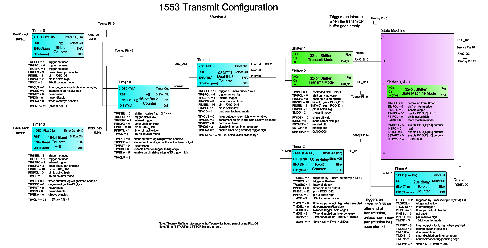

FlexIO 1553 Transmit class
This class implements a 1553 transmitter in one FlexIO module of the NXP i.MXRT1062 processor. This is a physical layer only, it sends a SYNC, 16 data bits, and a parity bit. It does not know about packets, it does not know the meaning of any of the control bits other than parity. There is no synchronization with the receive module (thus no acknowledge).
Pin pairs
A 1553 transmitter needs two differential output pins to control the required isolation transformer. Due to the way that FlexIO uses pins in State Machine mode, these are the only combinations of pins available for TX:
Teensy 4.1
FlexIO_1: FlexIO_2: FlexIO_3:
pair1: n/a pair1: 10,12 pair1: 19,18
pair2: n/a pair2: 11,13 pair2: 14,15
pair3: 2,3 pair3: n/a pair3: 40,41
pair4: 4,33 pair4: n/a pair4: 17,16
In military use, there are usually two 1553 transmitters, and two receivers. This is for fail safe redundancy. Only one pin pair is needed for normal operation, but if two are desired, we can drive two sets of hardware from a single FlexIO transmitter by using multiple pin pairs. Only one pair will be enabled at a time (by software) so that it appears to work as two separate transmitters. Or both may be enabled at the same time to have a true redundant transmitter.
Each pin pair is listed in the order of pos, neg pins. These will control the FET drivers and isolation transformer needed for standard 1553. Pay attention to the order. If you get them backwards, it wont work. (Yes, it could be fixed in FlexIO).
Configure FlexIO module and the pins pair(s) that you would like to use when instantiating FlexIO_1553TX().
Hardware
Debug pins
FlexIO Configuration
This diagram tries to cover the full configuration for one FlexIO 1553 transmit module (not counting features added for debug only).

State machine
If you have never seen a state diagram before, this may look intimidating, but is really is fairly simple. Each circle represents a state. In FlexIO, each state is a shifter, and the state number is the number of the shifter used for that state. If that already sounds confusing, just remember that when a shifter is in state machine mode, it is not used as a shifter, but as a 32-bit register to hold the configuration for that state.
I always use state 0 as the initial state. You do not have to use state 0, but this is the default, so why fight it? For the other states I use 4 thru 7 (there are only 8 shifters, thus only 8 possible states). Shifter1 and 2 I actually use as shifters, and Shifter3 is unused.
Interrupts
The following interrupts may be used to trigger software routines from a FlexIO transmitter event.
Shifter1: Transmitter Empty
This interrupt will occur when FlexIO loads a word from the Shifter1 holding register into the transmit shifter. The holding register acts as a one word FIFO for the transmitter. This interrupt should be used by the software to load the next word to FlexIO for transmit.
Timer2: End of Transmit
This interrupt will occur just after the last bit has been sent from the transmitter. This occurs at the same time that the transmitter goes into tri-state. This can be used to signal the end of a packet, or a bus turnaround from TX to RX.
Timer6: End of Transmit Delayed
One advantage of a FlexIO peripheral: if you dont like the behavior of an interrupt, you can make your own. This is basically the same as the "End of Transmit" interrupt above, but is delayed by another 2 microseconds. This timer has no purpose other than to generate an interrupt.
The receiver takes an extra half clock (1/2 us) after receiving the last data bit to latch the data into the receive data register, so if you need the EOT interrupt to happen after the "Receiver Full" interrupt, use this interrupt instead.
References
https://www.milstd1553.com/wp-content/uploads/2012/12/MIL-STD-1553B.pdf https://nepp.nasa.gov/docuploads/43745C0A-323E-4346-A434F4342178CD0E/MIL-STD-1553.pdf